Environments
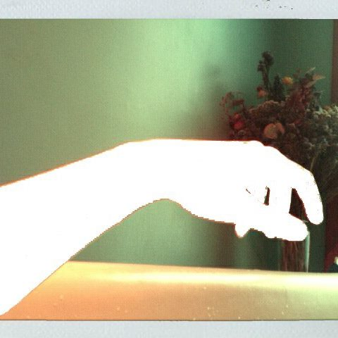 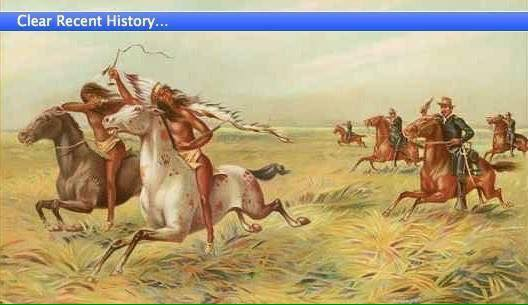 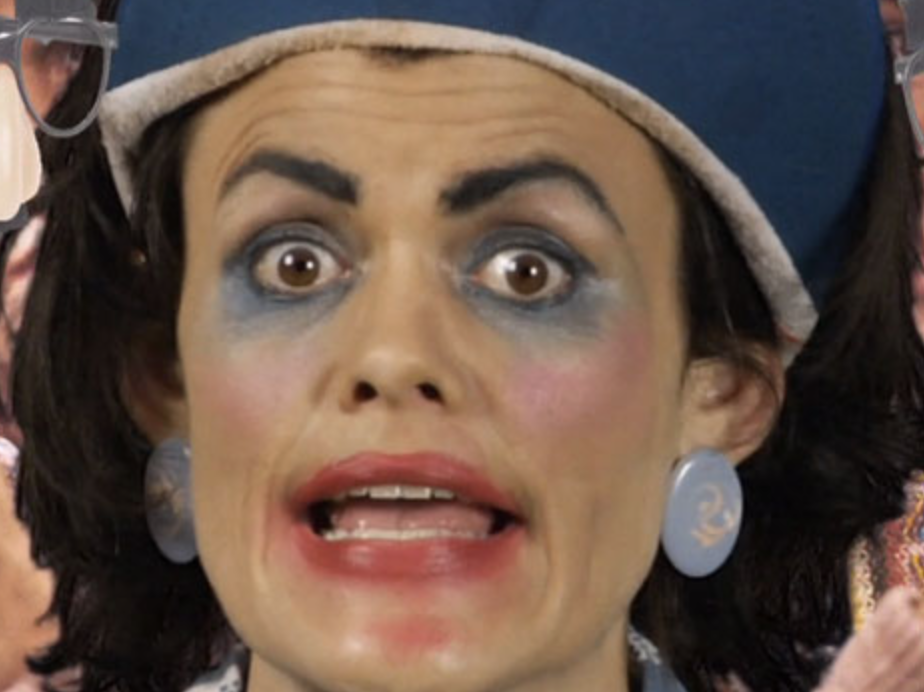
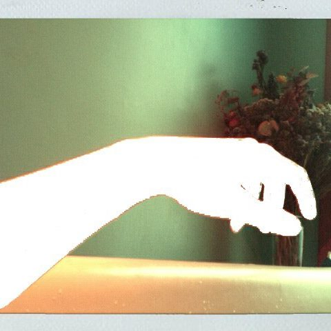 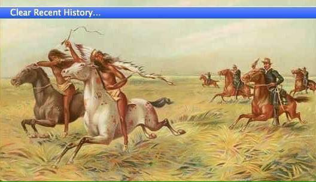 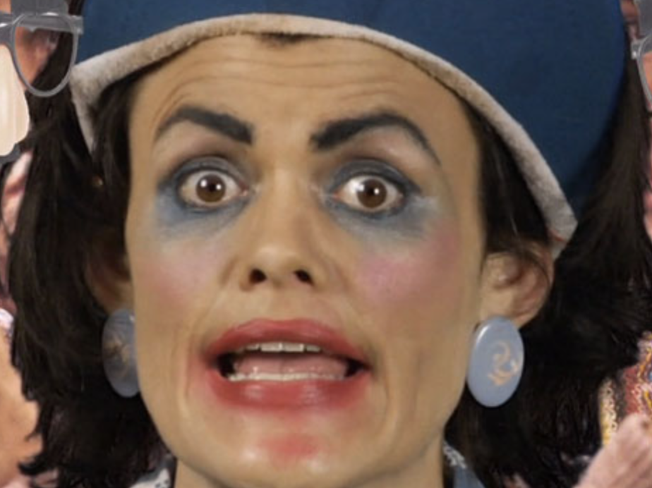
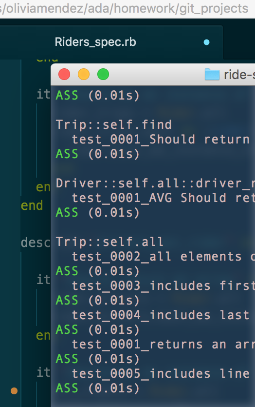
 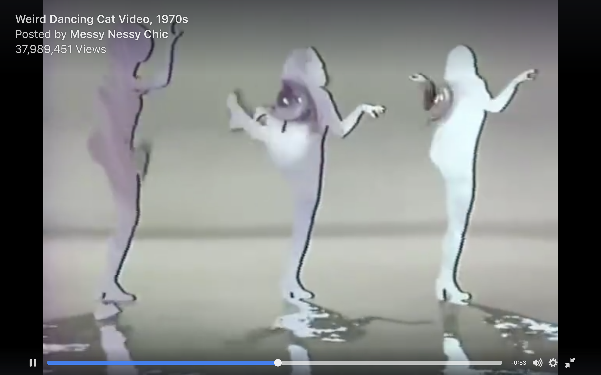
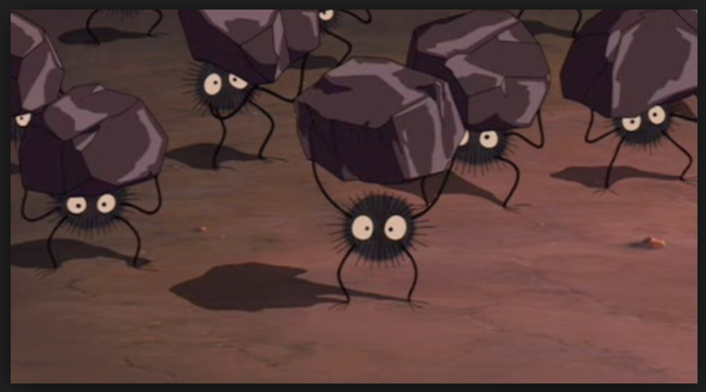
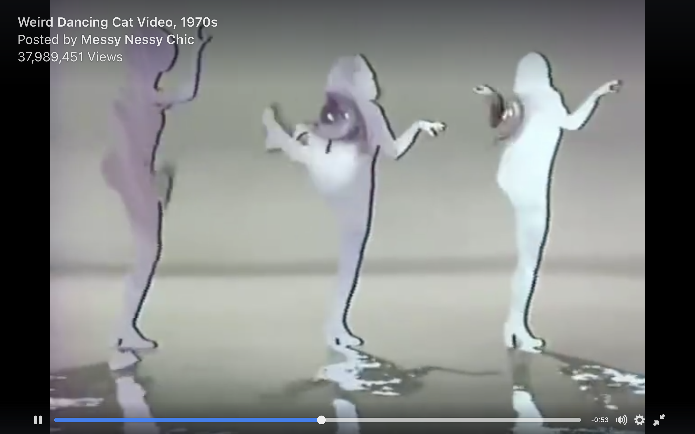
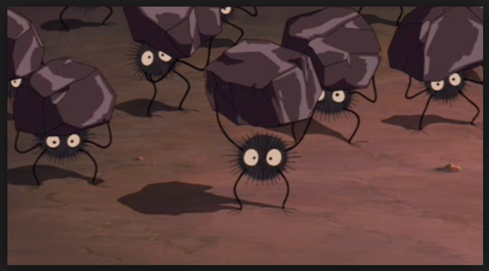

"April is the cruellest month, breeding Lilacs out of the dead land, mixing Memory and desire, stirring Dull roots with spring rain. Winter kept us warm, covering Earth in forgetful snow, feeding A little life with dried tubers. Summer surprised us, coming over the Starnbergersee With a shower of rain; we stopped in the colonnade, And went on in sunlight, into the Hofgarten, And drank coffee, and talked for an hour. Bin gar keine Russin, stamm’ aus Litauen, echt deutsch. And when we were children, staying at the arch-duke’s, My cousin’s, he took me out on a sled, And I was frightened. He said, Marie, Marie, hold on tight. And down we went. In the mountains, there you feel free. I read, much of the night, and go south in the winter. What are the roots that clutch, what branches grow Out of this stony rubbish? Son of man, You cannot say, or guess, for you know only A heap of broken images, where the sun beats, And the dead tree gives no shelter, the cricket no relief, And the dry stone no sound of water. Only There is shadow under this red rock, (Come in under the shadow of this red rock), And I will show you something different from either Your shadow at morning striding behind you Or your shadow at evening rising to meet you; I will show you fear in a handful of dust. Frisch weht der Wind Der Heimat zu Mein Irisch Kind, Wo weilest du? “You gave me hyacinths first a year ago; “They called me the hyacinth girl.” —Yet when we came back, late, from the Hyacinth garden, Your arms full, and your hair wet, I could not Speak, and my eyes failed, I was neither Living nor dead, and I knew nothing, Looking into the heart of light, the silence. Oed’ und leer das Meer. Madame Sosostris, famous clairvoyante, Had a bad cold, nevertheless Is known to be the wisest woman in Europe, With a wicked pack of cards. Here, said she, Is your card, the drowned Phoenician Sailor, (Those are pearls that were his eyes. Look!) Here is Belladonna, the Lady of the Rocks, The lady of situations. Here is the man with three staves, and here the Wheel, And here is the one-eyed merchant, and this card, Which is blank, is something he carries on his back, Which I am forbidden to see. I do not find The Hanged Man. Fear death by water. I see crowds of people, walking round in a ring. Thank you. If you see dear Mrs. Equitone, Tell her I bring the horoscope myself: One must be so careful these days. Unreal City, Under the brown fog of a winter dawn, A crowd flowed over London Bridge, so many, I had not thought death had undone so many. Sighs, short and infrequent, were exhaled, And each man fixed his eyes before his feet. Flowed up the hill and down King William Street, To where Saint Mary Woolnoth kept the hours With a dead sound on the final stroke of nine. There I saw one I knew, and stopped him, crying: “Stetson! “You who were with me in the ships at Mylae! “That corpse you planted last year in your garden, “Has it begun to sprout? Will it bloom this year? “Or has the sudden frost disturbed its bed? “Oh keep the Dog far hence, that’s friend to men, “Or with his nails he’ll dig it up again! “You! hypocrite lecteur!—mon semblable,—mon frère!”